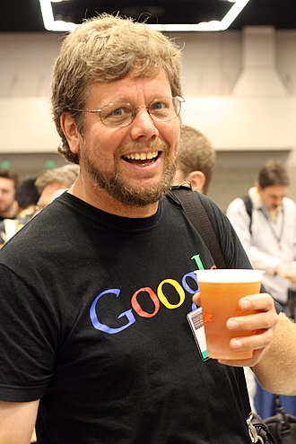
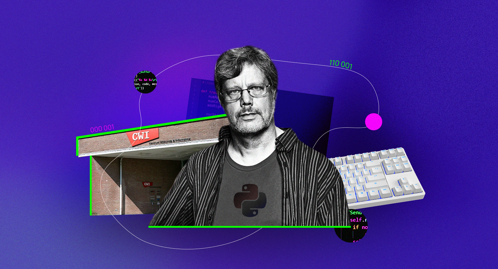

Введение
 Гвидо ван Россум — нидерландский программист, создатель языка программирования Python. Он начал разработку Python в 1989 году, стремясь создать язык, сочетающий простоту и мощность, который был бы назван в честь британского шоу "Монти Пайтон"<<". До Python ван Россум работал над языком ABC. В 2018 году он ушел с поста «великодушного пожизненного диктатора» проекта, что означает окончательное принятие решений, но продолжал оставаться как старший разработчик. Он работал в Google и Dropbox, а в 2020 году присоединился к Microsoft.
По словам гвидо ван россума, Жизнь — это то, что с тобой происходит, пока ты строишь планы
, и с этим сложно поспорить.